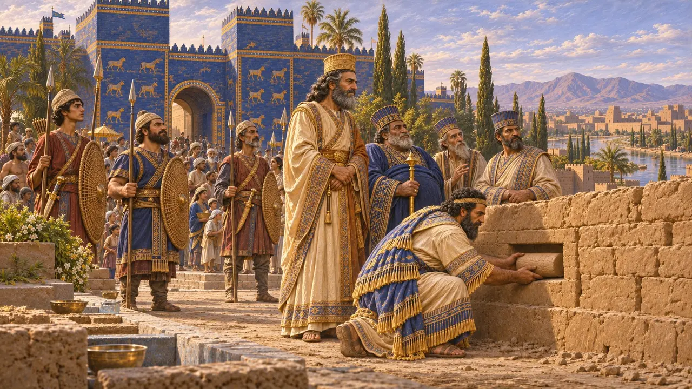
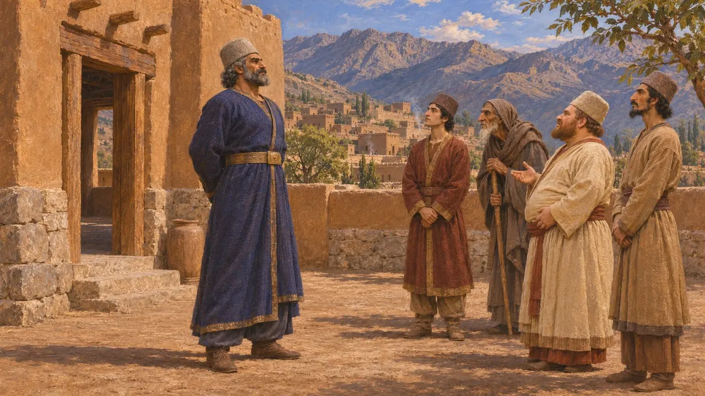
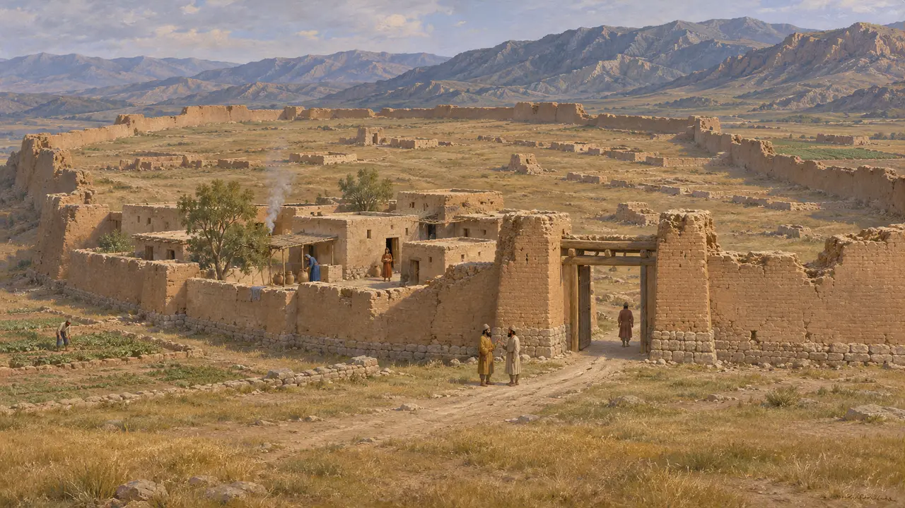
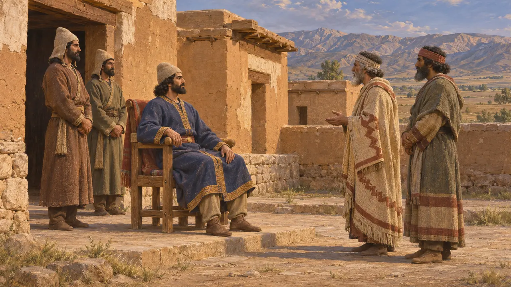
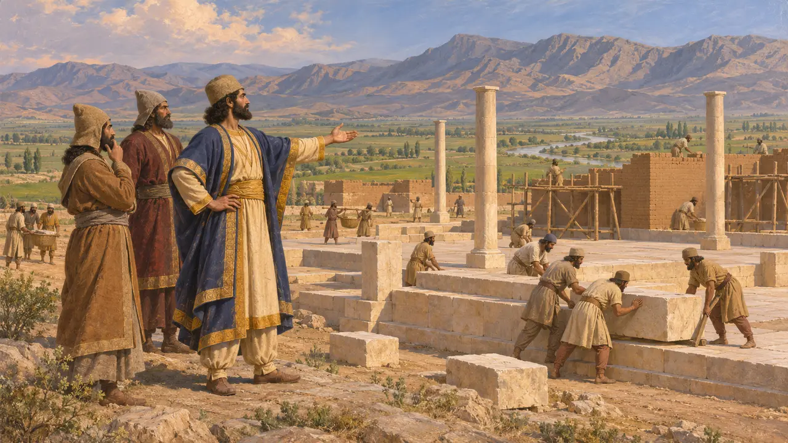

Anşan
MÖ 550'den önce, Kyros'un atalarının krallığı olan Persis'teki Elam yaylalarının eski kraliyet kenti
Oyunda: Bölüm 1: Kurucunun Mezarı
Şimdi Şiraz yakınlarındaki Tall-i Malyan'ın bulunduğu yer olan Anşan, Elam dağlık bölgesinin kadim bir kraliyet şehriydi. Adı, Kyros'tan önceki Pers krallarının unvanı oldu: Kyros Silindiri onu Anşan kralı olarak anar; babasını, dedesini ve büyük dedesini de ondan önceki Anşan kralları olarak sayar.
Oyunda: Oyun, Pasargadai bölümünün girişinde ve görev özetlerinde Babil metinlerinde olduğu gibi Kyros'a Anşan Kralı der; Anşan'ın kendisi gösterilmez.

Anşan Kralları
BelgelerdeKyros Silindiri'nde, MÖ 539'dan sonra Babilce yazılmış metinde, Kyros kendisini Kambyses'in oğlu, Büyük Kral, Anşan Kralı; Kyros'un torunu, Büyük Kral, Anşan Kralı; Teispes'in soyundan, Büyük Kral, Anşan Kralı olarak adlandırır. Nabonidus Kroniği de Astyages'e karşı kazandığı zaferi kaydederken onu Anşan Kralı olarak anar.
Cyrus Cylinder; Nabonidus Chronicle

Bir Elam şehri
Belgelerdeİki bin yıl boyunca Elam kralları kendilerine Anşan ve Susa kralları unvanını verdi; böylece krallıklarının dağlık ve ovalık yarılarını birleştirdiler. Tall-i Malyan'daki kazılarda surlarla çevrili büyük bir şehir ve ona Anşan adını veren Elam tabletleri bulundu. Kyros'un zamanında şehir epeyce küçülmüştü.
W. M. Sumner, excavations at Tall-i Malyan; the Malyan tablets

Eski unvandaki Persler
TartışmalıPerslerin Anşan'a nasıl hükmetmeye başladığı bilinmemektedir. Bazı tarihçiler bu unvanın, Kyros'un ailesinin bir Elam krallığını ve onun geleneklerini devraldığını gösterdiğini düşünür; bazıları ise bunun yalnızca eski bir bölge adı olduğunu söyler. Dareios sonradan soyunu Akhaimenes'e dayandırmış ve bu unvanı hiç kullanmamıştır.
Behistun inscription §1-4; D. T. Potts, The Archaeology of Elam, 1999

Anşan'dan Pasargadai'ye
Antik anlatıKyros'un Med kralı Astyages'e karşı isyanı MÖ 553-550 civarında Persis'te başladı; zaferinin ardından Anşan'ın eski merkezinin kuzeydoğusunda, Pulvar ovasında Pasargadai'yi kurdu. Herodotos Anşan'ın adını hiç anmaz; yalnızca Perslerden ve onların boylarından söz eder.
Herodotus 1.125-130; Nabonidus Chronicle
Kaynaklar
- Cyrus Cylinder
- Nabonidus Chronicle
- Herodotus 1.125-130
- D. T. Potts, The Archaeology of Elam, 1999